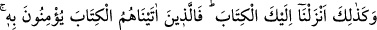
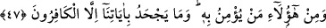
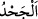

47. (Resûlüm!) İşte böylece sana (önceki kitapları tasdik eden) bu Kitab’ı
indirdik. Onun için, kendilerine kitap verdiklerimiz ona îman ediyorlar. Şunlardan
(Araplardan) da ona îman eden nice kimseler vardır. Âyetlerimizi, ancak kâfirler
(inatları yüzünden) bile bile inkâr eder.
“(Resûlüm!) İşte böylece sana (önceki kitapları tasdik eden) bu Kitab’ı” yâni
Kur’ân’ı “indirdik. Onun için,” iki tâifeden “kendilerine kitap verdiklerimiz ona”
Kur’an’a “îman ediyorlar.”
“İşte böylece” ifâdesi, sonra gelen fiilin (inzâl) kaynağına (masdar) işâret eder. Yani,
diğer kitapların inzâline uygun, onlar gibi eşsiz bir inzâl ile indirdik, demektir.
Burada kasdedilen, Abdullah b. Selâm gibi îman eden ehl-i kitaptır. Diğerleri
kitaptakilerle amel etmedikleri, yâni Muhammed (s.a.) ile ilgili haberlerin gereğini
yapıp îman etmedikleri için sanki kendilerine kitap verilmemiş gibi sayılmışlardır.
Yahud da burada kasdedilen, Rasûlullah (s.a.)’den önceki ehl-i kitaptır. Çünkü onlar,
kitapta gördüklerine göre Kur’ân’ın nüzûlüne îmân ederlerdi. Kuss b. Sâide, Buhayra,
Nastûrâ, Varaka ve diğerleri bunlardandır. Onların “kitap verilenler” ile tahsis
edilmesi; kendilerinden sonra gelecek neslin Rasûlullah (s.a.)’in muâsırı olacağını,
ellerindeki kitabın hükmünün neshedilip kaldırılacağını ve artık kitabın onlara
verilmeyeceğini haber vermelerinden dolayıdır.
Âyetteki “fâ”; sonraki kısmı, önceki kısma tertib etmek içindir; zira onların Kur’ân’a
îmanları, yukarıda ifâde edildiği şekilde Kur’ân’ın indirilmesine bağlı idi.
“Şunlardan (Araplardan) da ona” Kur’an’a “îman eden nice kimseler vardır.” Bize
âid bu yüce kitabımızın âyetlerini ancak inkâr edenler, küfürde aşırı şiddet gösteren
kâfirlerdir. Çünkü küfürdeki aşırılık; onları, hakîkatı anlamaya götüren bir düşünceden
alıkoyar.
“Âyetlerimizi, ancak kâfirler (inadları yüzünden) bile bile inkâr eder.”
“__WORD__ inkâr, kalpte müsbet olan bir şeyi nefyetmek, ortadan kaldırmak ya da kalpte
menfî olan bir şeyi müsbet görmek anlamına gelir. Kitâb-ı Azîm’in “âyetlerimiz”
şeklinde ifâde edilmesi, zâhirinin mânâya tam olarak delâlet ettiğini göstermek ve onun
Allah katından olduğunu hatırlatmak içindir. “Kâfirler”, ifâdesiyle küfürde şiddet
sâhibi, sâbit fikirli kimseler kasdedilmektedir. Zira onların bu durumu, kendilerini
hakikate ulaştıracak düşünce ve tefekkürden uzak tutar.
Âyette, kalb erbâbına ve bâtınî ilim sâhiplerine, -ki onların ilimleri Hakk vergisine
dayanır- çalışarak ilim tahsil eden zâhir ulemâsı ile rıfk, yumuşaklık ve sükûnet
içerisinde tartışma ve münâkaşa etmelerinin gerekliliğine bir işâret vardır. Tâ ki mevkî
makam fitnesi ateşlenip inkârları artmasın. Allah onlardan kime rahmet ederse, Hakka
delâlet eden apaçık delilleri ve huccetleri tasdik eder ve hidâyete nâil olur. Allah kimi